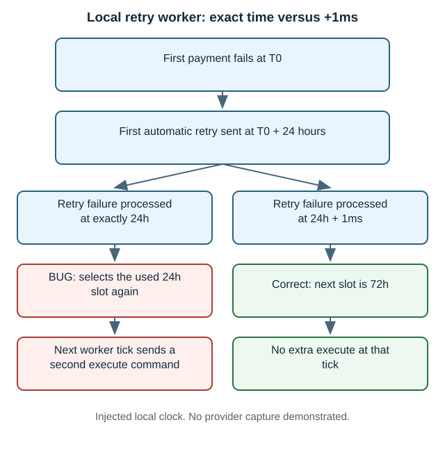
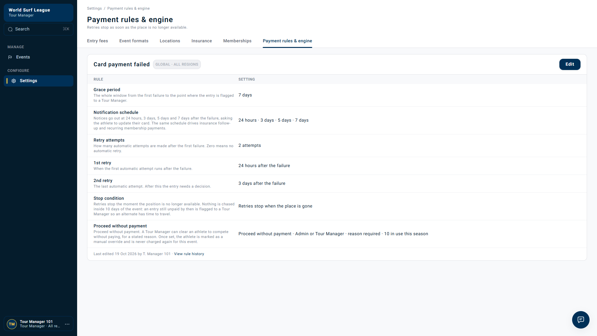
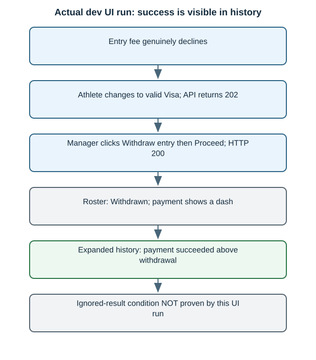
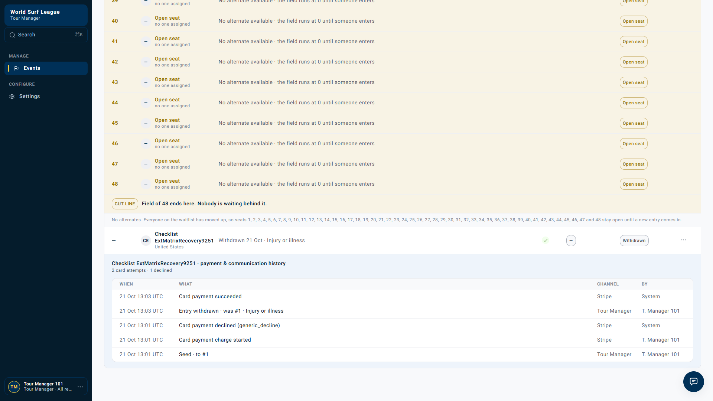

Rerun · 21 October 2026 · Local backend tests + actual dev UI
Two retry bugs: what happened and what the UI showed
Simple written report · Timestamped UI/API evidence · All bug reports
Rerun outcome
Both original backend assertions still fail. The extra worker test shows a second execute command at the exact boundary, with a passing +1ms control. The UI withdrawal run recorded success in history, so it did not prove the ignored-result condition end to end.
No duplicate provider charge was shown. No shared rules or live clocks were changed.
1. Completed retry slot selected again
The scheduler can reuse the first retry time. In the exact-time local worker test it sent a second execute command. Moving the result just 1 millisecond later avoided that extra command.


What the UI showed: Payment rules lists 1st retry at 24 hours, 2nd retry at 3 days. The inspected panel and row actions did not provide clock acceleration. Clicking a manual retry would test a different flow.
Meaning: a narrow scheduling defect is confirmed in local application logic. An extra real card charge and its practical timing frequency remain unproven.

New backend recording: exact-time worker failure and +1ms passing control
Rerun recording: original domain assertion still fails
Actual UI recording: payment rules inspection, no edits
Exact worker output · Worker XML · Executable probe · Original detailed bug
2. Late payment success ignored after cancellation
The local charge-result method ignores success after its charge is cancelled. In the separate real UI run, however, payment success appeared in history after withdrawal. That UI run did not reproduce a missing success record.
What failed in the backend test

This uses disposable Postgres and directly calls the repository method. It proves a gap in that method, without proving that all other services lose the payment.
What actually happened in the UI attempt


The manager opened Withdraw entry, selected a reason and clicked Proceed. Card replacement ran through the real athlete API just before Proceed. Final roster: Withdrawn, payment —; expanded history: Card payment succeeded above the withdrawal. There was one success line and no manual retry after withdrawal.
Meaning: staff must inspect history to see the successful payment on this withdrawn entry. This is not proof that the live success was ignored. Processor start/completion timing and refund eligibility remain unknown.

Actual UI action recording: withdrawal while valid-card recovery runs
Separate read-only UI recording: final payment history, after the run
Backend rerun recording: late-success repository assertion still fails
Exact backend failure · Postgres XML · Original detailed bug
Actual response timeline
UTC response-observation times, not Stripe timestamps.
| UTC | Action | HTTP |
|---|---|---|
| 2026-10-21T13:02:58.247Z | Athlete changes to valid saved Visa through real API | 202 |
| 2026-10-21T13:02:59.654Z | Manager clicked Proceed in real withdrawal dialog | 200 |
| 2026-10-21T13:03:00.578Z | Captured final API roster and history | readback |
Fresh event: 01a15e8d-00c4-732a-9f7a-a8293edfba1a
Entry: 01a15e8d-0b9f-747f-a902-cbcba6135ae6
What this does and does not establish
- Confirmed: both original local backend failures still reproduce; the local worker emitted a second command under an exact same-time failure.
- Confirmed UI: the manager withdrawal completed and the final history displayed a successful payment.
- Not established: duplicate Stripe capture, exact provider ordering, all-service payment loss, or a live automatic retry at the exact 24h boundary.
- No dev clock, shared payment rule, UUID or database timestamp was changed. No refund, application fix or Jira edit.
Setup and evidence details
A styled-radio selector stopped the first UI attempt before card replacement or withdrawal. The run resumed on the same declined fixture using the visible reason label. The final action recording covers that resumed sequence. The history-review recording is read-only after the run, and the backend recordings show actual pytest output rather than application screens. Source/deployed revision was not verified. Old-fixture review is a comparison only.